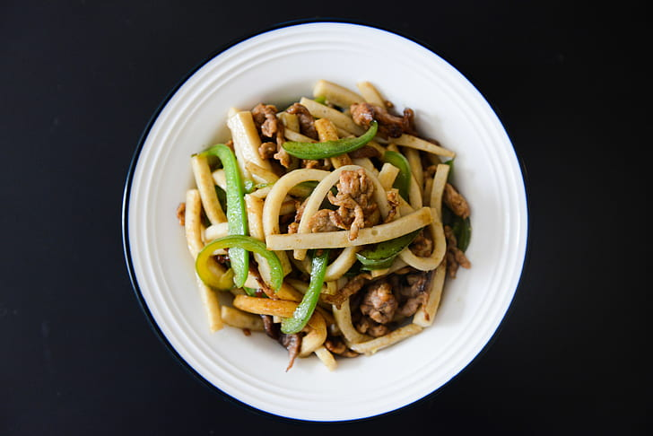

Home
Beef and Broccoli Udon Noodles

Description
A delicious easy and quick recipe for Beef and Broccoli Udon Noodles. Ever wanted that takeout taste without
having to order and waste money, look no further.
Our recipe is sure to give your favorite takeout a run for their money. This recipe will take about 40 minutes
in total and give you enough for four delicious servings, that you can either eat now or safe it for another
day.
Ingredients
Marinade
- 2 tablespoons seasame oil
- 1 tablespoon cornstarch
- 1 tablespoon soy sauce
- 1/2 teaspoon salt
- 1/4 teaspoon baking soda
- 1/2 pound flank steak,sliced across garin(1/4-inch thick)
Sauce
- 3 tablespoons mirin
- 3 tablespoons water
- 3 tablespoons soy water
- 1 tablespoon dark soy sauce
- 1 tablespoon sweet soy sauce
- 1 tablespoon oyster sauce
- 1 tablespoon rice vinegar
To Cook
- 1 head broccoli, broken into bite-sized florets
- 20 ounces jumbo udon noodles
- 3 clove garlic,minced
- 1(1/2-inch) piece fresh ginger
- 2 green onions, sliced
- 1 teaspoon black sesame seeds
- 1 teaspoon toasted sesame seeds
Steps
- Whisk together sesame oil, cornstarch, 1 tablespoon soy sauce, salt,
and baking soda together in a bowl. Add sliced steak to the bowl and marinate for 10 minutes.
- Meanwhile, whisk mirin, water, 3 tablespoons soy sauce, dark soy
sauce, sweet soy sauce, oyster sauce, and rice vinegar together in a small bowl; set sauce aside.
- Bring a large pot of lightly salted water to a boil over high heat.
- Heat a wok over medium high heat, and cook and stir steak in the hot
wok until steak pieces are caramelized and browned, 3 to 4 minutes. Remove steak from wok; set aside to keep
warm.
- Add broccoli to the wok with a small amount of water. Cover with a lid
and steam broccoli until bright green, about 5 minutes.
- Add udon noodles to boiling water; return water to a boil and cook until
noodles are tender with a bite, 2 to 3 minutes.
- Add udon noodles to boiling water; return water to a boil and
cook until noodles are tender with a bite, 2 to 3 minutes.
- Drain noodles; stir noodles and prepared sauce into the wok to
combine. Sprinkle with green onions, black sesame seeds, and toasted sesame seeds to serve.